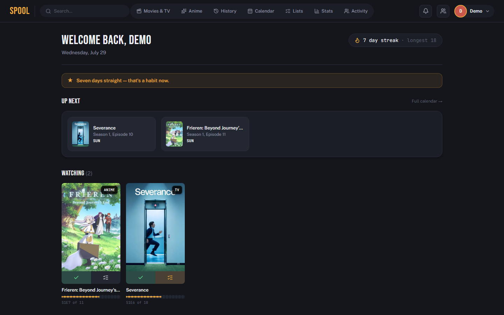
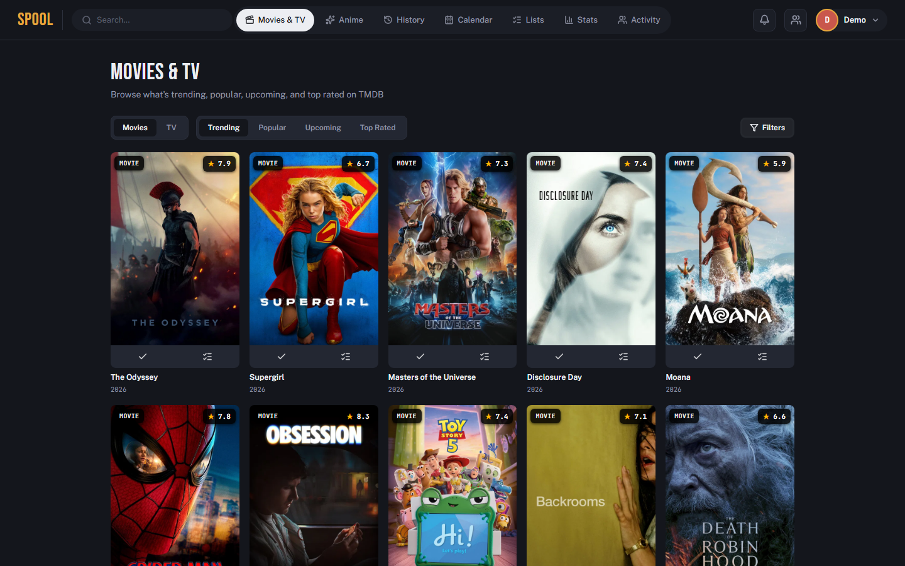
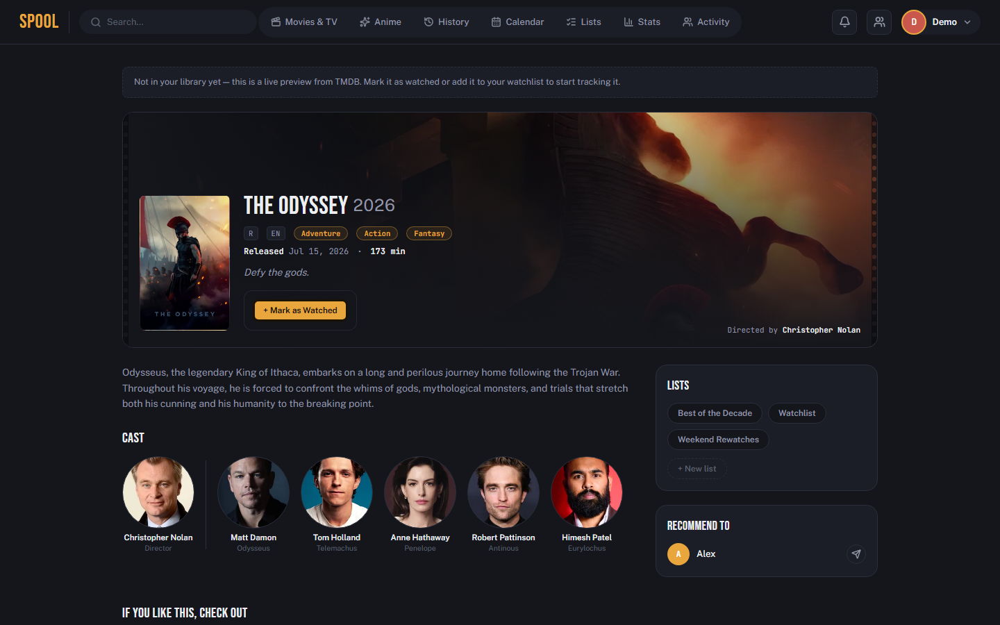
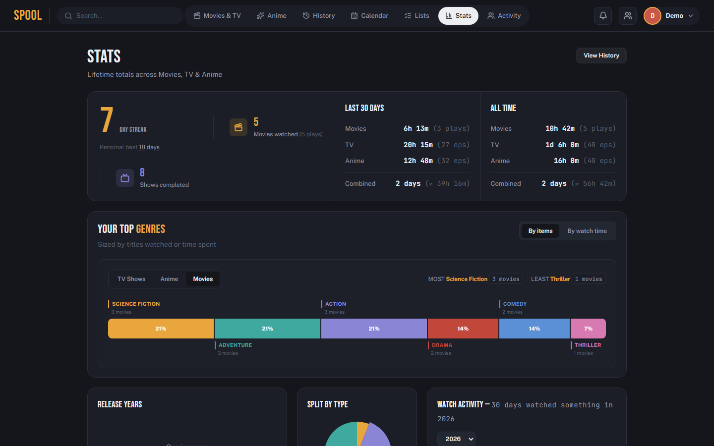
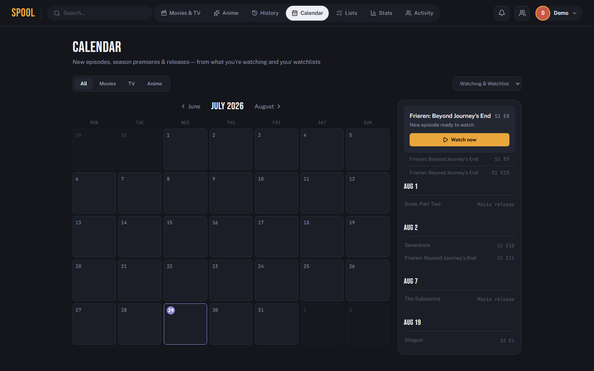

Your household's own Trakt — movies, TV & anime, tracked on a server you own. Self-hosted, Docker Compose, five containers, running in minutes.

No accounts to pay for, no data leaving your own server.
Continue watching, up next, watchlist, and recommendations — one page, no digging.
Trending, popular, upcoming, and top rated — live from TMDB, filterable by genre, year, runtime, rating, and more.
New episodes, season premieres, and movie releases synced nightly for anything you're tracking.
Watch streaks, genre breakdown, year breakdown, and an activity heatmap — per profile.
Shared and private lists — shared lists stay creator-only for edit/delete.
OAuth-connect an existing account, or import a CSV export with column-mapping and a preview step.
Every household member gets their own history, lists, and stats on one shared instance.
Five containers — app, worker, scheduler, Postgres, Redis. One command to run it all.
Real renders against seeded demo data — nothing mocked up.




The whole install — no separate app-server setup.
git clone https://github.com/aljaz-h/spool-tracker.git
cd spool-tracker
./setup.sh # or .\setup.ps1 on WindowsWrites a working .env (random secret key + DB password, prompts for your hostname) and brings the stack up. See the full README for manual configuration, Trakt/Simkl setup, and deploying without cloning the repo.